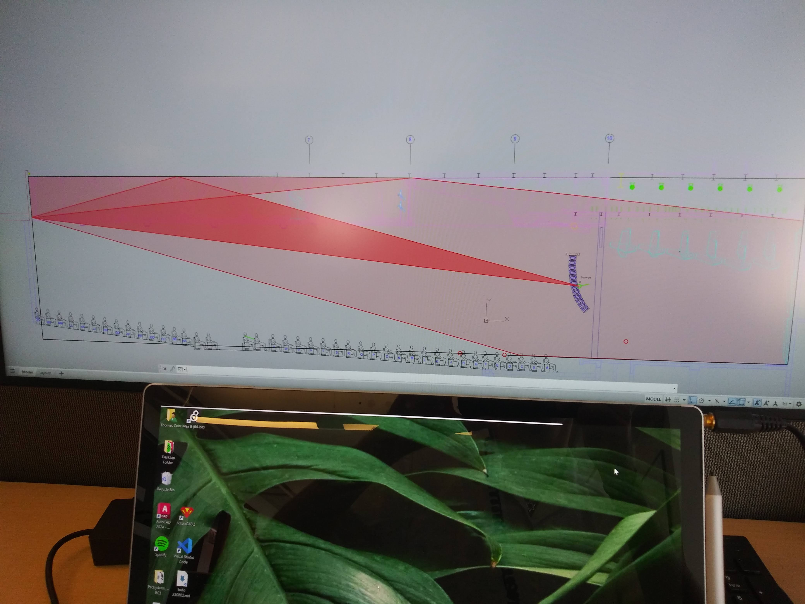
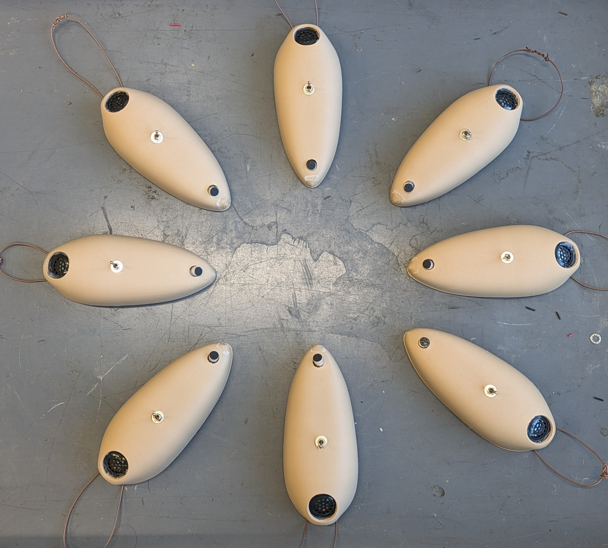

Thomas Coor's Digital Portfolio
updated December 25th 2024
About Me
Hi, my name is Thomas Coor. I build electro-acoustic systems, play music, and cook. I share my ideas on these subjects on this website.
First, here is my one-page resume
Acoustic Systems Co-op, Bose Corparation, Framingham, MA (Summer - Winter 2024)
I created a prototype of a customer-led room EQ protocol for their soundbar products. A speaker's EQ, or Equalization Curve, is a graph that shows the levels for each frequency of output. Speaker and headphone designers might have a target curve that they want their product to sound like.
However, whatever sound you play through a speaker will be drastically changed by the room it's in. To fix this, we can create a Correction Curve by measuring a speaker's response at the listening position, taking the difference between that and the Target Curve, and adding that difference to the Speaker's EQ.

The system uses this headband with a built-in microphone that the user wears at their listening position (their couch) while the speaker plays a series of calibration tones. I can't say much more about the project right now for confidentiality but that is the *very* basic idea.
Crucial to the system is a microphone calibration step, so we know the actual pressure measured at a position, compared to what the (often poor quality) microphone tells us.

An anechoic chamber was needed to characterize the microphones.

We did a lot of testing to find the optimal physical setup for the calibration.

Here's a slice of a day of taking measurements.

Bose has incredible views in all seasons.


I baked a huge challah for my final presentation!
Intern, Threshold Acoustics, LLC, Chicago, IL (Summmer 2023)
I did a lot of random things here
One of the coolest though was building this dodecahedron speaker. Basically, low frequency sound played by a speaker radiates outward omnidirectionally, or in all directions. However, as the pitch rises, the beam narrows. When we create a room response, we want to put sound energy into the room and have it reflect off every surface. In large rooms like concert halls, a single transducer won't be able to throw high frequencies far around enough to accurately capture the full effect of the room. So instead, we created a multi-sided speaker to shoot sound in more directions. This is a pretty common architectural acoustics tool. I helped in wiring, assembly, mathematically modelling, and testing.

An exciting tool used in architectural acoustics is ray tracing, where we estimate the impulse response of a room by simulating the scattering of sound as bouncing rays. I think there are a lot of improvements that can be made here. Firstly, it's fairly inaccurate. We expected errors up to 33%, which I would consider unacceptable. It's also extremely computationally inefficient. I believe we were simulating countless 'particles' reflecting four times, then across however many room configuration parameters we wanted to test across. One of my tasks was designing the rooms from architectural plans in SketchUp. We simplified a lot of the geometry to help in computation as well (Notice the rectangular prism subbed in for individual seats). Every object also gets its own coefficients of absorption and reflection, to determine how much acoustic energy will be included in the next bounce.
This was some weird but pretty 2-D manual ray tracing I did in AutoCAD for a report that was going out.

An unexpected task I was often handed was drawing classical concert seating layouts in AutoCAD. These were generally done to show how a venue would fit on stage along with the baffles, proscenia, risers, or extenders we were planning for them
Intern, Andy Cavatorta Studio, Brooklyn, NY (Summmer 2022)
Between Sophomore and Junior year of college I got to work with this really cool guy, Andy Cavatorta, on one of his projects. It's hard to describe exactly what he does; in fact he describes himself with a different title depending on who he's talking to. But he creates kinetic sculptures for museums and performers, basically.
Over the Summer we worked on this massive piece called "The Whale", a 25-foot long sculpture of a whale that plays a 250 year-long song generated from a combination of whale sounds and Hildegarde von Bingen, built for the MIT Museum. I know, it all sounds insane, but it actually does sound insane too when you switch it on! I took the top photo while I was up on a ladder soldering the motor controllers together, and the bottom one is of the side of The Whale while we were setting it up at its gallery space.

Here's how it works: Music stored as MIDI is sent to a Raspberry Pi computer, which translates the data into instructions to the 14 DC motors. Each motor spins a set of 'ribs' on the whale, a boom with a corrugated plastic tube running its length, whose length has been tuned such that when the tube rotates at a certain speed, will begin to resonate and sing. The 14 ribs are pitched chromatically, and each can hit two or three harmonics, for a pretty good musical range.
While Andy was handling all of the business side of the project with the museum curators, along with wrangling the firmware, I was getting my hands dirty with electronics. I wired the whole motor mechanism together, and tuned the ribs with a cool Peterson Stroboscopic tuner.
The music was pretty cool too. Woods Hole Oceanographic Institute sent us decades of Bowhead and Humpback Whale recordings, which I tried to parse into musical notes. This was my first big DSP project. I was excited to found how much high frequency information exists in whale sounds; chirps, clicks, and squeaks are not what I expected for the world's biggest animals, and I had to filter those out. Even through the recording, the low mourns of the whales were incredibly eerie. Though they were extremely loud, I knew the whales were far away, hidden in the dark water. The von Bingen stuff was much harder, actually. For one, we only know of 99 songs whe wrote. It was also difficult to find solo voice recordings of all of her music.

Processing each audio file into MIDI before feeding it into the neural network was pretty difficult. Besides filtering out high frequencies, I also had to make logic rules about the maximum and minimum length of notes. I used the RNN tutorial in Tensorflow Keras to generate more MIDI messages from my input MIDI. Frankly, it didn't really sound like anything on the scale of whale to liturgical, but we discovered that so long as we slowed down the music enough, practically any combination of spinning ribs would actually sound quite pleasant.
project nested tabs
Mixed-Signal Radio, Senior Capstone Project (Fall 2023 - Spring 2024)
Lorentz Violin, Personal Project (2023 - 2024)

This is the Lorentz Violin, an electromechanical musical instrument that uses spinning disks to make sound. I brought this to the 2023 Guthman Musical Instrument Competition at Georgia Tech this year, which was the coolest engineering and music experience of my life.

Sound is generated by these steel disks with waveforms cut into their circumference, called 'tonewheels'. They spin over a guitar pickup (a
very
strong induct) to induce their shape as a current. The Hammond B3 organ was the first use of tonewheels, where every key controlled a different wheel spinning at a fixed speed. The Lorentz Violin uses only one wheel spinning at a veriable speed to produce different notes.
This is the scary (and dangerous) white noise tone wheel. The tonewheel shapes were generated in python, then the points were exported to Autodesk Inventor via Excel, where I added axle and screw holes. From there I sent that .dxf to a lasercutter.

The wheels are turned via DC motor with an encoder.

The motor speed is controlled by a keyboard, where a cursor slides along a marked track. The cursor position is monitored by an Arduino, which converts the position to a target speed to be reached by the motor. The Arduino has a simple PID algorithm to keep ensure the motor stays in tune, changes note quickly, and does not overshoot the target speed.

Volume is controlled with this pedal, actuated by the right hand. The right arm cradles the body.

The electronics are incredibly messy and it's a wonder it all works. 12V power is used by the motor, motor controller and audio amplifier. 5V is used by the arduino, motor controller (for logic), keyboard, and pedal. The signal from the guitar pickup is amplified and sent to the transducer on the bridge.

Building the body tested and expanded my woodworking skills. I was very interested in how real violins make sound; the strings themselves move very little air, and must conduct their signal into an object with a large surface area. The body was created over this skeleton made of MDF; I found inspiration for the alien shape in the Hysteresis Curve, which shows how ferrous materials will magnetize when in the presence of an electric field, and then maintain their magnetism even after the electric field disappears.

The sides were made from specialty guitar wood for the sides. In order to bend them to fit the shape of the skeleton, I bent them on this wood bender I rigged up from a piece of an old fuel cell and a heat gun. I kept the wood soaking in water, and with gentle hands rocked the piece back and forth on the bender until it was too dry to continue.

I switched through the pieces, checking the curve to the skeleton, until each piece was done.

The finished sides were clamped and glued into place.

This matched, aged, African Rosewood I bought for the top and bottom plates is the most expensive wood by density I've ever bought.

The Sigma motif in the top plate is an inside joke. Violins of course have F holes cut into their top plate, which as I understand act as the speaker port. I always thought they looked like integral signs. Since the Lorentz Violin performs digital signal processing, I thought to pay homage to the F holes by cutting them as Sigmas, the mathematical symbol for summation.

Love the smell, color and gratification of shellac.

Here it is again, assembled.

Like the strings of a violin, the excites sits on a bridge to conduct its signal into the body.

The two legs of the bridge sit over one of the main structural segments of the skeleton, as well as the soundpost. The skeleton conducts the signal laterally through the plates, while the soundpost conducts the signal to the bottom plate.

Here's the Lorentz Violin backstage at Georgia Tech while I practice my performance.
Mixed-Signal Radio, Senior Final Project
I can't actually find the finished paper, so here's our nearly completed draft.
These delightful creatures are little musicians. When you turn one on, it starts to chirp at a random note. It also listens for sounds around it and slowly drifts the note it sings towards the pitch that it hears. The emergent phenomenon of eight of these guys is absolute cacophany that eventually merges into a single (honestly still piercing) note. Shown in the picture, we built a tree habitat for them to live on, but guests at our presentation were invited to pick one up and move around the space with it, to hear the chirps go crazy as it lost connection to the group, then have the chirps link up with some new sound it picks up.
This is the pamphlet we handed out at the demo.

The guts of the bugs
They like to hang out together
My groupmates, across the Art and Architecture schools.
Not great for phone calls.
why is this disappearing?
Cooking
This is my food blog!

Another Bento lunch, I'm calling these Kimcheese Quesadillas! Kimchi, beans, and cheddar cheese in a corn tortilla. I can make the beans ahead of time in my pressure cooker, and then I can assemble the quesadillas in my skillet the morning of. Here are some steps
- Heat up skillet, no oil.
- You can probably just fit one tortilla on the skillet at a time, but it's ok if two overlap by like 1cm at this point.
- No need to shred cheese here, just cut it thin and cover as much surface as possible.
- Pop a lid overhead and let the cheese melt for like 20 seconds
- Place the beans and kimchi ontp only one side of the quesadillas. Be sure to add less than you think, so keep things ~0.5in from the edge. Also, transfer as little bean/kimchi liquid as possible
- Fold the quesadilla over and pop a lid on. Let cheese glue everything together for 30 seconds.

When I went back home for Thanksgiving this year, my parents made Borscht an Eastern European beet soup. This one included potato, carrot, dill, and a vegetable stock. Borscht is often served with sour cream. Ukraine has a richer kind of sour cream called Smetana.

I made these candied citrus peels for Halloween in 2024. I was getting pretty upset with all things plastic at the time, and the combination of cheap costumes, cheap decorations and cheaper chocolate seemed like such a monumental waste. I did the little I could about this; I made my costume out of natural fibers (and well enough that I'll wear it again). I made a small wreath from fallen leaves. And I made the best candy in the World! Here how you make it:
- Pick out your fruit. I used lemons, limes, and oranges, but I bet grapefruit would work too. You should probably cook one at a time, otherwise the tastes kinda mix.
- Cut each fruit into slices, cut across lines of longitude.
- Carefully cut the flesh from the peel. You will not need the flesh for anything else, so you can snack on them and save for a fruit salad.
- Cut the peels lengthwise so no piece is more than 5mm at their widest.
- We now have to blach the peels to remove bitterness. Blanch the peels in water for 10 minutes, drain the water, and repeat three times total.
- Now we'll make a sugar syrup. That's easy, just equal parts water and sugar. Don't let it fully boil.
- Add the peels to the syrup, and let this cook for 30 minutes.
- In the meantime, prepare a cooling rack to allow the peels to be fully suspended.
- Fish out the peels and let them dry for 10 minutes.
- Roll the peels in sugar.
- You're done!

This one came from an old German cookbook, and is called "Himmel und Erde", which means "Heaven and Earth". Can you guess what two featured foods might refer to Heaven and Earth? I can think of a few, but in this case, it's apples for Heaven and potatoes for earth. The only faithful part of my dinner is the ingredients, you're supposed to serve stewed apples over mashed potatoes. I simply stir-fried the ingredients together. Potatoes are the carbs, bacon is the fat and protein, cabbage and onion for flavor and texture, apples add sweetness, and vinegar, worcestershire sauce, and mustard temper it. November 2024

For my final presentation at Bose I baked a huge Challah for the attendees. Heres the recipe: Ingredients
- 1.5 tablespoons dry yeast
- 0.75 cups of sugar
- 1.75 cups of warm water
- 3 eggs (2 for dough, 1 for wash)
- 0.5 cups of oil (I used olive)
- 1 tablespoon salt
- half of a 5 lb bag of flour (~9 cups)
- Mix the yeast & sugar, then add the warm water and mix.
- Let it sit for about 10 minutes, until the yeast bubbles.
- Add in eggs, oil, and salt.
- Add flour into the mixture a few cups at a time, and keep mixing until it becomes too thick to continue. You will likely need only 7 cups of the flour.
- Knead the dough with your hands for ~5 minutes until the dough toughens and isn't sticky (you might not need to use all the flour).
- Take the dough out, oil the bowl, and place it back in.
- Cover the dough with a wet kitchen towel and let it rise for 2 hours.
- Divide the dough in half. Cut each half into three equal pieces.
- Stretch and roll them into long braids no thinner than an inch in diameter.
- 10.Braid*, then fold the end slightly. Let them rise for an additional 30 minutes.
- Mix one egg in a bowl and lightly coat the surface of the challas.
- Preheat oven to 350 and bake for ~35 minutes (middle rack, or switch racks after 18 minutes)
*To Braid: lightly stick together the ends of the three braids at one point, and fold one side into the middle, then the opposing side into the middle and repeat. Fold the finished end when done to keep it together.TODO: add diagram of braiding
December 2024
Chicken Chasseur, the french cousin of Chicken Cacciatore. A chicken and tomato stew. I made enough for 4 servings. The recipe comes from Adam Ragusea:
Ingredients:
- 4 lb bone-in, skin-on chicken
- 1 lb button mushrooms
- 1-2 shallots
- 1-2 carrots
- 14 oz crushed tomatoes (they generally come in cans of 16 oz)
- flour
- shicken stock
- soy sauce (there has to be a euro-centric form of vegetarian fermented sauce)
- strong liquor like cognac or barnady
- white wine
- oil
- butter
- herbs for garnush
- egg noodles or rice
- S + P
- Cut the mushrooms and carrot and get them sauteing in a little fat. Dice the shallot and add it to the pan once the mushrooms and carrot look almost done.
- Meanwhile, season the chicken pieces heavily with salt and pepper and dust lightly with the flour. When the veg is soft, remove it or push it to the side so you can brown the chicken pieces.
- When the chicken is golden brown, deglaze the pan with brandy, add the vegetables back if necessary, stir in the tomatoes, a little white wine if you're using it, and enough stock to cover everything. Simmer until the chicken is as tender as you want it — I gave mine an hour.
- When the chicken is done, take the pieces out and boil the sauce down until thick. Taste and adjust seasoning — I really like a dash of soy sauce, assuming the sauce can handle the salt. Return the chicken to the pan to coat and reheat, garnish with fresh herbs and serve with noodles.
October 2024

When I was exploring South England in June of 2024 I would go to farmers markets and buy random assortments of fruits, veggies, cheese, bread, and cured meats, whatever I could find.

I'll write more about this one later, but this is my failed falafel in action. I was supposed to use dry chickpeas soaked overnight, but instead I used dry chickpeas that I cooked until half done (half of 45 minutes) in my pressure cooker. They fell apart the moment I took them out of the fry oil. September 2024

My first attempt with homemade pasta! I couldn't roll the pasta out as thin as I would like, so that increased cook time from 30 seconds to 1 minute. You can see I also tried to roll in herbs, but they did not adhere. I cut them into wide noodles with a knife. August 2024

This is an excellent batch meal, very similar in make to Plov, though much wetter. Some things to mention: Cajun cooking like this will use a Trinity base instead of a Mire Poix, which substitutes the carrot for green bell pepper. Also, the spice blend used requires a few interesting guys, so I gut a premade mix at my food co-op. August 2024

TODO

My roommate bought some pre-cooked lobsters at Market Basket and ate them plain. Literally. I took the discarded shells and cooked them down into an awesome lobster stock which Ive been using for my cooking all the time. August 2024

This i a work lunch featuring food I had when staying at my genius friend Cat's house. Tuna fishcakes with tartar sauce, anadama bread, blueberries, cheddar cheese, brussels sprouts, and a Needham, which is chocolate-covered mashed potato.

Homemade gnocchi and then a giant beyond beef meastsauce and mirepoix. Averything in my fridge went into this. I dislike how bejond beef sticks and burns. Seuptemer 2024

Paneer is extremely easy to make. Start with 1 Quart of milk, brought just barely to a boil. Then squeeze in one lemon worth of juice. Mix for 2 minutes as it curdles. Line a colander with cheesecloth. Start by ladelling the solids onto the cheesecloth, then slowly pour the rest through. Discard the whey, and wrap, wash, drain, and squeeze the curd. Form into a brick and press with a heavy object in your fridge for 4 hours. At that point you can cut it and fry it. Dember 2024
A beet and walnut pesto with my gnocchi. Reddit called this 'Pesto Bismol'.

A saag curry made in my mortar and pestle, along with feta cheese, which I thought would work in another way, compared to paneer

A weeknight plov. July 2024